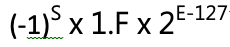

1.3 補數
對應方式

超碼 (Excess code)
- excess - α code => 代表超 α 碼
- 一般若有 N bit 則超 2^N-1 碼, 即 excess - 2^N-1 code
- ex: 5 bits 一般為 excess - 2^5-1 code
- 令： x: 原始值, α: 超碼, c: 超碼後內容, 則: c = x + α
ex1: (1011.11)2, 若格式 S(1) C(5) M(10), 問以
(1) excess-16 表示
(2) 以 2’s complement 表示 the result?
Sol:
正規化 = +(0.101111)2 * 2^4
(1) excess-16
| S | C | M |
|---|---|---|
| 0 | 10100 | 1011110000 |
α = 16
c = x + α = 4 + 16 = 20
(2) 2’s complement
+4 = 00100
| S | C | M |
|---|---|---|
| 0 | 00100 | 1011110000 |
ex2: 5 bits, 採 excess-16, 則
(1)x = -12, c = ?
(2) x = 3, c = ?
(3) c = 01001, x = ?
(4) c = 11011, x = ?
(5) x 可表示的 range?
Sol:
- c = x + α = -12 + 16 = 4 = (00100)excess-16
- c = x + α = 3 + 16 = 19 = (10011)excess-16
- c = (01001)10 = 9, x = c - α => 9-16 = -7
- c = (11011) = 27, x = 27 - 16 = 11
-
計算組合 … … c 最小(0) 最大(11111) -α -16 16 x: -16 ~ + 15 => 同 2’s 補數表示法
ex3: (0.00001101)2, 若格式 S(1) C(5) M(10), 問以
(1) excess-16表示
(2) 以 2’s complement 表示的 result?
Sol:
正規化 = +(0.1101)2 x 2^-4
(1) excess-16
c = x + α
-4 + 16 = 12
| S | C | M |
|---|---|---|
| 0 | 01100 | 1101000000 |
(2) 2’s complement
+4 = 00100 => -4 = 11100
| S | C | M |
|---|---|---|
| 0 | 11100 | 1101000000 |
ex4:[反向題] - floating-point 格式 S(1) C(5) M(10), 內容為： 1110011110100100, 若指數分別以
(1) excess-16
(2) 2’s complement, 求原始值？
Sol:
(1)
| S | C | M |
|---|---|---|
| 1 | 11001 | 1110100100 |
| => -(0.1110100100)2 x 2^9 | ||
x = c - α => 25 - 16 = 9 |
(2)
| S | C | M |
|---|---|---|
| 1 | 11001 | 1110100100 |
| => -(0.1110100100)2 x 2^-7 | ||
| 2’s complement 表示法 1 1001 => -0111 = -7 |
Floating-point 的邊界值
- 最大正數, 最小正數, 最大負數, 最小負數
-
圖示：

-
註明：
|1| = |4|
|2| = |3|
=> 只差正負數 -
ex: floating-point 格式： S(1) C(5) M(10), C 用 excess-code 表示, 則：
(1) 最大值：(正數, 指數最大, 尾數最大)
所以 Max = +(0.1111111111)2 x 2^15 = +(1-2^-10) x 2^15 = 2^15-2^5
(2) 最小正數(正數, 指數最小, 尾數最小)
所以 最小正數 = +(0.1) x 2^-16 = +2^-17
(3) 最大負數(負數, 指數最小, 尾數最小)
所以 最大負數 = -(0.1) x 2^-16 = -2^-17
(4) 最小值
所以 Min = -(0.1111111111)2 x 2^15 = -(1-2^-10) x 2^15 -
Note: (0.1…1)2 = 1 - 2^-N (0.0…01)2 = 2^-N (100…0)2 = 2^N (1…1)2 = 2^N - 1
IEEE754 浮點數表示法
分為：
- 單精確度 Single precision => 32 bits
=> S(1) C(E)(8) M(F)(23)
=> 正規化表示方式：

- 倍精確度 Double precision => 64 bits
=> S(1) C(11) M(52)
=> 正規化表示方式：

特殊值
- E = 255, F = 0 => 代表正無限大
255 代表全為 1 時, 保留給系統不可使用 - E = 0, F = 0 => 代表正負0
0 代表全為 0 時, 保留給系統不可使用 - E = 255, F != 0 => 代表 NaN(Not a number)
- E = 0, F != 0 => 代表無法正規化
ex: (98.625)10, 以 IEEE754 單精確表示之結果 = ?
Sol:
c = x + α = 6 + 127 = 133
(98.625)10
= + (1100010.101)2
= +(1.100010101)2 x 2^6
| S | C | M |
|---|---|---|
| 0 | 10000101 | 10001010100000000000000 |
| => (42C54000)16 |